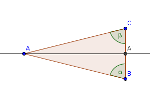

| Choisissez votre langue ! | Choose your language ! |
Un triangle ABC est dit
'isocèle en A'
si les côtés [AB] et {AC] ont même longueur.
Montrer que dans ces conditions :
La bissectrice, la médiane et la hauteur issues de A sont confondues.
Les angles dits 'à la base' soit
\( \displaystyle \widehat{CBA} \)
et
\( \displaystyle \widehat{BCA} \)
sont égaux et valent
\( \displaystyle \frac{\pi -\widehat{CAB}}{2} \)
.

Un triangle isocèle en A pour lequel les angles à la base sont le double de l'angle au sommet
\( \displaystyle \widehat{CAB} \)
est appelé un 'triangle d'or'.
Montrer que pour tout triangle d'or tel que décrit ci-dessus, on a :
\( \displaystyle BC=\frac{AB}{\varphi }=\frac{AC}{\varphi } \)
où
\( \displaystyle \varphi =\frac{1+\sqrt{5}}{2} \)
(nombre d'or).
En déduire une construction à la règle et au compas d'un pentagone régulier.
aide
Montrer que \( \displaystyle \cos\left( \frac{\pi}{5} \right) = \frac{1 + \sqrt{5}}{4} \)
solution
Soit s la réflexion dont l'axe Δ est la bissectrice de ([AB),[AC)).
Alors s(B)=C.
Il en résulte que Δ est la médiatrice de [BC], donc si A' est l'intersection de Δ avec (BC), A' est le milieu de [BC], donc Δ est la hauteur issue de A ainsi que la médiane issue de A.
Il en résulte que les (non orientés) α et β se correspondent dans une isométrie.
Ils sont donc égaux.
Le fait que chacun d'eux vaut \( \displaystyle \alpha -\frac{\widehat{CAB}}{2} \) résulte simplement de
A triangle ABC is said to be
'isosceles at A'
if the sides [AB] and {AC] have the same length.
Show that under these conditions:
The bisector, the median and the altitude from A are the same.
The angles called 'at the base' either
\( \displaystyle \widehat{CBA} \)
And
\( \displaystyle \widehat{BCA} \)
are equal and worth
\( \displaystyle \frac{\pi -\widehat{CAB}}{2} \)
.
An isosceles triangle at A for which the angles at the base are twice the angle at the apex
\( \displaystyle \widehat{CAB} \)
is called a 'golden triangle'.
Show that for any golden triangle as described above, we have:
\( \displaystyle BC=\frac{AB}{\varphi }=\frac{AC}{\varphi } \)
where
\( \displaystyle \varphi =\frac{1+\sqrt{5}}{2} \)
(golden ratio).
Deduce a straightedge and compass construction of a regular pentagon.
hint
Show that \( \displaystyle \cos\left( \frac{\pi}{5} \right) = \frac{1 + \sqrt{5}}{4} \)
solution
Let s be the reflection whose mirror Δ is the bisector of ([AB),[AC)).
Then s(B)=C.
As a result, Δ is the perpendicular bisector of [BC], so if A' is the intersection of Δ with (BC), A' is the midpoint of [BC], so Δ is the height from A as well as the median from A.
This results in the (unoriented) α and β correspond in an isometry.
They are therefore equal.
The fact that each of them is worth \( \displaystyle \alpha -\frac{\widehat{CAB}}{2} \) simply results from
|
Création Gilles Dubois - licence CC-BY-SA
Created by Gilles Dubois - licence CC-BY-SA
|
Septembre 2023
September 2023
|
Version mobile Jquery
Mobile Jquery version
|
|